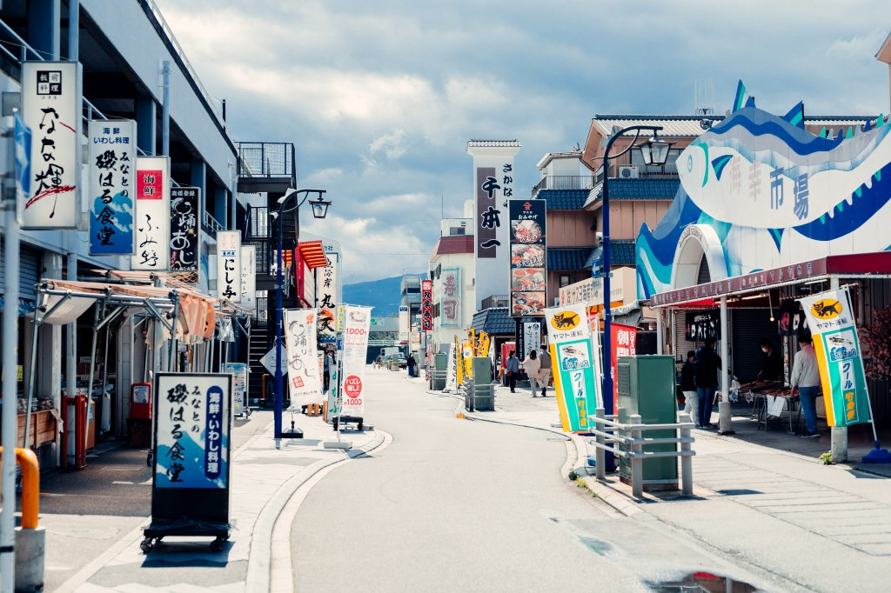

観光スポット
沼津港大型展望水門「びゅうお」
沼津港に高くそびえる巨大な建造物で、展望施設が併設されており、富士山や箱根連山、沼津アルプスをはじめ、駿河湾に突き出した大瀬崎をくっきりと見ることができます。
伊豆・三津シーパラダイス
ユーモアたっぷりのセイウチやアシカ、豪快なトドのショー、富士山を眺めながらのイルカショーなどをお楽しみいただけます。
沼津港飲食店街

沼津港で水揚げされたばかりの新鮮な海の幸を楽しめる飲食店街です。